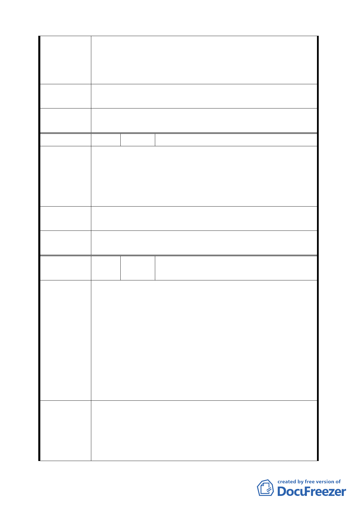

2.若未來 R6 整體開發，忽然降低某部份量體，亦不符合都市
設計整體規劃原則。
3.C4、C5 街廓東北側原計畫為 40m 限高，此次改為限高 60m，
而相鄰之 R6 街廓卻沒有享受同等待遇，實令人不解。
建議辦法
建議 R6 全街廓皆調為限高 60M，不必區分前後，以符合量
體規劃合理性。
委 員會決 議 同意陳情民眾所提建議，取消公展計畫中建物高度之管制，
回歸本市土地使用分區管制規則規定辦理。
編 號 5 陳情人 林朝聘
土地標示：南港區經貿段 73 地號。
本基地臨接 50m 寬經貿二路，依規定必須退縮 20m 才能建
陳 情 理 由 築，惟檢視相關圖說，本基地為唯一需退縮 20m 之住宅區，
其它皆為商業區，且 R8、R10 皆無退縮，既看不出都市規劃
整體設計理念，且不符合公平原則，實有欠公義。
本區應比照台北市有關商業區開放空間相關法令，提供適當
建 議 辦 法 容積獎勵，以符合公平原則。。
委員會決議
同意發展局所提「住宅區不得適用綜合設計規定」，維持原公
展計畫。
編
號
6
陳情人 臺北市南港區南港段一小段 700 地號等 71
筆土地更新單元都市更新會
針對於台北市政府 11 月 30 日晚間 7 點 30 分所召開「修訂臺
北市南港經貿園區特定專用區細部計畫通盤檢討案」公聽
會，說明修訂內容，其中涉及南港 700 地號等 72 筆土地更新
單元(Rl6 區塊) 部份為:(1)住宅區建築高度限制依然為 40 公
陳情理由
尺並未放寬，且建蔽率由原計畫 50%縮減為 45%。(2）地下
室開挖率由原計畫 60%縮減為 55%。(3)時程獎勵值 15%非為
核定公告實施日起算。本街廓所有權人配合政府都市更新政
策，在重重約束下可能導致申請容積獎勵無法使用完畢的現
象，造成居民不願參加都市更新，顯與市府都更施政方針不
符，故希望本社區居民能有下列三項建議 。
1.建議本更新單元 (R16 區塊)由原建築高度限制 40 公尺放寬
建築高度限制至 60 公尺。
建 議 辦 法 2.建議本更新單元(Rl6 區塊)地下室開挖率仍維持 60%，勿變
更為 55%。
3.時程獎勵值 15%之起算時間，一併修改為修訂案核定公告
20